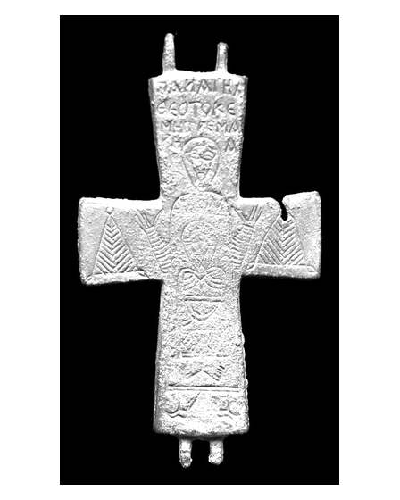

Catalog › CE-0388 · APH2017-7
Valvă izolată de encolpion din aliaj de cupru, cat. 7, Aphrodisias
sec. XI (1001–1100) · Aphrodisias, Turcia
single valve of a reliquary cross, altul; c. XI (1001–1100); found at Aphrodisias, Turcia.


Identificare
- Categorie
- Valvă izolată
- Material
- Altul
- Tehnică
- Gravare (incizie)
- Dimensiuni
- Î 82 × L 45 × Gr 5 mm
Iconografie
- Revers
- Maica Domnului Orantă
- Descriere revers
- Valva reversului, cu suprafețe mai puțin netede decât la alte piese; mică ruptură în partea de sus a brațului transversal drept. La centru Maica Domnului orantă, cu Pruncul în fața stomacului; fețele în nimb, aproape triunghiulare; tunica Pruncului decorată cu benzi groase care împart registre orizontale, rochia Maicii Domnului lăsată goală; se văd și picioarele lui Hristos. Compoziția aluzionează la Întrupare. Deasupra capului Maicii Domnului inscripție pe patru rânduri.
- Inscripții
- ΠΑΝΑΓΗΑ / ΘΕΟΤΟΚΕ / ΜΗΤΡΕ (sic) ΜΑ/ΡΕΑ
- Limba
- Greacă
Datare și atribuire
- Datare
- sec. XI (1001–1100)
- Centru
- Necunoscut
- Tipologie
- Pitarakis (2006), forma tip I
Descoperire
- Localitate
- Aphrodisias
- Țară
- Turcia
- Context
- Necunoscut
- Coordonate
- 37.7088° N, 28.7238° E
- Precizia locului
- Doar localitatea
Păstrare și referințe
- Nr. inventar
- 84-237
- Bibliografie
- H. Jeffery, The Archaeology of Middle Byzantine Aphrodisias, teză DPhil în arheologie clasică, University of Oxford, aprilie 2019 [Jeffery 2019], vol. 3 (Figures), Descriptive Catalogue Four: Copper Alloy Reliquary Crosses, cat. nr. 7 (paginile nu sunt numerotate în PDF; p. PDF 437), fotografie reprodusă la p. PDF 436.
- Figura
- fotografie în catalog, fără număr de figură
- Planșe
- Jeffery 2019, vol. 3, Cat. Four, p. PDF 436
- Analogii
- Pitarakis (2006), nr. 296–310.
- Observații
- Context: Cath.83.118. Autorul spune că iconografia gravată are paralele într-o serie produsă în Asia Mică și la Constantinopol în sec. XI. Despre inscripție: de lungime neobișnuită, cu vocabular altfel neatestat, în formă nescurtată; „Μητέρ Μαρία” e foarte curios, fiindcă în tradiția ortodoxă Maica Domnului e rar numită cu numele ei. Dimensiuni: L. 8,2 × l. 4,5 × gros. 0,5 cm. Material: „copper alloy” (aliaj de cupru) în sursă. Coordonate: ale localității (aproximative), nu date în sursă.
Citare: Corpus Encolpiorum, CE-0388, Valvă izolată de encolpion din aliaj de cupru, cat. 7, Aphrodisias, https://vitaliejosanu1979-ux.github.io/primul-meu-proiect/piese/APH2017-7/ (accesat 2026-10-17).